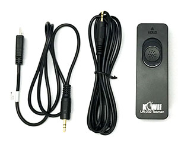

Imaging devices/撮影機器
(update 2021.11, 2022.5)
Camera body/カメラ本体
I am using Nikon D810 and Sony a7RIII for CoMBI. I chose the models with full size sensor and high resolution. It is important to be able to shoot in high definition over a wide area because I need to capture the area around the block for correcting misalignment. However, the disadvantage of full-size cameras is the high cost. To save money, CoMBI can be built with APS-C size cameras. Any camera that can be connected to a shutter release cable can be used for CoMBI.
私は Nikon D810とSony a7RIIIをCoMBIに使っています。フルサイズセンサーで高精細なモデルを選びました。ズレ補正のためにブロック周辺も写す必要があるため、広範囲にわたって高精細に撮影できることが大切です。しかし、フルサイズカメラは値段が高いことがデメリットです。CoMBIは、もちろん、APS−Cサイズのカメラでも構築できます。シャッターリリースケーブルさえ接続できるカメラであれば、なんでもCoMBIに使えます。
Recommended models/おすすめ
The pixel size of commercially available full-frame cameras is 3.7-8.4 µm. Among them, I listed the high resolution models (3.7 - 4.8 µm). Back-surface irradiation type sensors are a new type of sensor, characterized by high sensitivity. They are more expensive, but worth for laboratory use. A USB power supply function is useful while imaging. Without the function, purchase an AC power kit.
市販のフルサイズ機では、画素サイズは3.7-8.4 µmです。その中から高精細モデル（3.7 - 4.8 µｍ）をリストアップしました。裏面照射型センサーは、新しいタイプのセンサーで、感度が高いことを特徴とします。価格は高めですが、研究室での使用におすすめです。USB給電機能があると、撮影中ノートパソコンなどから給電できます。USB給電ができないタイプは、別売りのAC電源キットを購入します。
| Company, mount | Model | Pixel size |
Approx.price 2021 |
Release year |
Sensor type |
Interface | USB power supply |
|---|---|---|---|---|---|---|---|
| Nikon F | D810 | 4.88 µm | ¥200,000 | 2014 | USB3.0(5G)-µB, release | ||
| Nikon F | D850 | 4.35 µm | ¥280,000 | 2017 | Back | USB3.0(5G)-µB, release | |
| Nikon Z | Z7 | 4.35 µm | ¥300,000 | 2018 | Back | USB3.0(5G)-C, release | |
| Nikon Z | Z7II | 4.35 µm | ¥360,000 | 2020 | Back | USB3.0(5G)-C, release | Yes |
| Nikon Z | Z9 | 4.35 µm | ¥768,000 | 2021 | Stacked | USB3.0(5G)-C, release | Yes |
| Sony E | a7RIII | 4.51 µm | ¥280,000 | 2017 | Back | USB3.0(5G)-C, release | Yes |
| Sony E | a7RIV | 3.76 µm | ¥360,000 | 2019 | Back | USB3.2(5G)-C, release | Yes |
| Sony E | a7IV | 4.67 µm | ¥330,000 | 2021 | Back | USB3.2(10G)-C, release | Yes |
| Canon EF | 5Ds | 4.13 µm | ¥340,000 | 2015 | USB3.0(5G)-µB, release | ||
| Canon RF | R5 | 4.39 µm | ¥460,000 | 2020 | USB3.1.2(10G)-C, release | via Canon's PD-E1 |
Low-cost model/節約コース
With an APS-C sensor camera, you can build a CoMBI at low cost. If you just want to take pictures of small specimens, you will have no worries. Canon has released several APS-C models. One thing to note about Canon cameras is the mount type. If you use Canon's macro lens (EF), you will need a mount conversion adapter to convert it to an APS-C mount (EF-M). Fujifilm and Pentax use a back-illuminated sensor X-trans CMOS4 or K3mIII. You can use Fuji's macro lens and Fuji's teleconverter. Pentax also supplys macro lens and teleconverter. Macro lenses from other manufacturers can be used with Fuji camera via mount adapters. Sony's APS-C mirrorless camera (a6*00) has a release terminal (Multi terminal) so it can be used for CoMBI without a PC. However, the Multi terminal is common with USB terminal, it cannot be used with a PC and release cable at the same time. Nikon's APS-C mirrorless cameras (Zfc, Z50) have only a USB port and cannot be used. Even USB-only models from Sony or Nikon could be used if you newly develop a HID with Arduino Leonardo or Pro micro.
APS-Cセンサー機なら、安くCoMBIを構築できます。小さめの標本を撮影するだけでしたら、困らないでしょう。キャノンのAPS-Cカメラの注意点は、マウント型です。キヤノン製マクロレンズ（EF）を使用する場合、マウント変換アダプタを別途用意して、APS-C用のマウント（EF-M）に変換します。富士フイルムとリコーペンタックスは、APS-Cで、裏面照射型センサーを採用しています(X-trans CMOS4, K3mIII)。FujiならFujiのマクロレンズとFujiのテレコンバータ、PentaxならPentaxのマクロレンズとテレコンバータが使えます。他社製マクロレンズ（Nikon F, Canon EFなど）も、マウントアダプタを介して利用でき、テレコン（Kenko）が使えます。さらに、FujiやPentaxにはUSB給電に対応しているモデルもあります。ソニーのAPS-Cミラーレス（a6*00）は、リリース端子（Multi端子）があるのでPCなしCoMBIに使えますが、PCとの接続端子も兼ねているため、PCとリリースケーブルの同時使用ができません。VLOGCAMは、USB端子しかないので、現状のCoMBIでは使えません。NikonのAPS-Cミラーレス（Zfc, Z50）は、USB端子しかないので使えません。（USBのみモデルでも、Arduino LeonardoやPro microでHIDを新開発すれば可能性はあります。）
| Company | Model | Pixel size |
Approx.price 2021 |
Release | Sensor type |
Interface | USB power supply |
|---|---|---|---|---|---|---|---|
| Canon | M6 MkII | 3.20 µm | ¥105,000 | 2019 | USB2-C(0.48G) & Release | ||
| Canon | Kiss X10 | 3.72 µm | ¥80,000 | 2019 | USB2-B(0.48G) & Release | ||
| Nikon | D7500 | 4.39 µm | ¥90,000 | 2017 | UBS2(0.48G)-µB & Release | ||
| Fujifilm | X-T30 | 3.77 µm | ¥80,000 | 2019 | Back | UBS3.1.1(5G)-C & Release | |
| Fujifilm | X-T30II | 3.77 µm | ¥100,000 | 2021 | Back | UBS3.1.1(5G)-C & Release | Yes |
| Fujifilm | X-T4 | 3.77 µm | ¥180,000 | 2020 | Bcak | UBS3.1.1-C(5G) & Release | Yes |
| Sony | a6600 | 3.92 µm | ¥160,000 | 2019 | Release only | ||
| Pentax | K-3 mark III | 3.76 µm | ¥220,000 | 2021 | Back | UBS3.2.1(5G)-C & Release | Yes |
SD card
I recommend 128GB or more. I keep the data of several experiments on the SD card for safety. Rarely, errors occur in image transfer or image processing, but you can error correct by going back to the original image in the SD card.
I've been using SanDisk 128GB "95 MB/s, SD XC UHS-I, UHSclass 3, Class 10, v30" and Toshiba 128GB "95 MB/s, SD XC UHS-I, UHSclass 3, Class 10" and have had no trouble with them. The read/write speed makes a big difference in price, but with CoMBI, you don't need to be so concerned about speed.
128GB以上をおすすめします。数回の実験データを念のためSDカードに残しています。まれに、画像転送や画像処理でエラーが発生しますが、SDカード内の元画像に戻ってくれば、エラー対応できます。SanDisk 128GB「95 MB/s, SD XC UHS-I, UHSclass 3, Class 10, v30」、Toshiba 128GB「95 MB/s, SD XC UHS-I, UHSclass 3, Class 10」を使っていて、これまでトラブルはありません。読み書き速度で価格がだいぶちがいますが、CoMBIでは速度にそれほどこだわる必要はありません。
Lens/レンズ
Macro lenses on the market generally have the ability to magnify an object by a factor of 1. For a full-size sensor 36x24mm, this means that you can fill the screen with the 36x24mm object. Teleconverters are available to increase the magnification to 1.4X or 2X. 2X macro lenses are also rarely available.
The manufacturer of the lens and the camera do not necessarily have to be the same. Some lenses can be attached to different manufacture's camera using a mount adapter. I prefer to use Nikon F-mount lenses with Nikon camera or Sony camera. F-mount lenses have a long flange focal length (the distance between the back end of the lens and the sensor) and manual aperture control. When I used an adapter with electronic contacts, I found some errors (lens recognition error, release error during serial imaging), though these are very rare case. Of course, if the camera and lens are made by the same manufacturer, the electronic control is also stable.
市販のマクロレンズは、一般的に、1倍の拡大能力があります。フルサイズセンサー36x24mmなら、対象物36x24mmを画面いっぱいに写せるという意味になります。テレコンバータが利用できるレンズであれば、倍率を1.4倍や2倍にできます。2倍マクロレンズも希に発売されています。
レンズとカメラのメーカーは、必ずしも同一である必要はありません。マウントアダプタを介してつけられる場合があります。私は、Nikon FマウントレンズをNikonカメラまたはSonyカメラに使っています。Fマウントレンズは、フランジバック（Frange focal length, レンズ後端とセンサまでの距離）が長いため、マウントアダプタを利用して、各社のカメラ本体につけられます。また、Fマウントレンズであれば、絞りをマニュアル制御できるため、安定したマニュアル撮影ができます。電子接点付きのアダプタを使ったとき、まれに動作が不安定でした。レンズの認識に時間がかかったり、連続撮影でまれにシャッターが切れなかったりといった症状です。マニュアル撮影なら、このようなトラブルなく安定しています。もっとも、カメラとレンズが同ーメーカー製であれば、電子制御でも安定しています。
Telephoto macro lens 150-200 mm/望遠マクロレンズ
When installing CoMBI with a cryostat (CoMBI-C type), a telephoto macro lens (focal length: 150-200 mm) is the best choice. This is because it has a wide working distance (WD, the distance from the tip of the lens to the object) of about 25 cm, allowing you to image at maximum magnification from outside the chamber. Unfortunately, many telephoto macros have been dropped from the catalog. Lenses in bold are using for CoMBI-C.
クリオスタットでCoMBIを構築する場合（CoMBI-C type）、望遠マクロ（焦点距離150-200 mm）が最適です。作動距離（レンズ先端から対象物までの距離、Working Distance, WD）が約25cmと広く、庫外から最高倍率で撮影できるからです。しかし、残念なことに、多くの望遠マクロは、カタログ落ちをしてしまいました。太字はCoMBIで使用しているレンズです。
| Mount type | Company | Focal length |
Approx.price 2021 |
Release | Discontinued or on sale |
|---|---|---|---|---|---|
| Nikon F | Nikon | 200 mm | ¥160,000 | 1993 | 2020 |
| Nikon F | Sigma | 180 mm | ¥160,000 | 2012 | 2020 |
| Nikon F | Sigma | 150 mm | ¥120,000 | 2011 | 2019 |
| Nikon F | Tamron | 180 mm | ¥50,000 | 2002 | 2016 |
| Nikon F | Irix | 150 mm | ¥110,000 | 2020 | on sale |
| Sony E | Irix Cine | 150 mm | ¥190,000 | 2020 | on sale |
| Canon EF | Canon | 180 mm | ¥160,000 | 2002 | 2021 |
| Canon EF | Sigma | 180 mm | ¥110,000 | 2012 | 2020 |
| Canon EF | Sigma | 150 mm | ¥100,000 | 2011 | 2019 |
| Canon EF | Tamron | 180 mm | ¥50,000 | 2002 | 2016 |
| Canon EF | Irix | 150 mm | ¥110,000 | 2020 | on sale |
Mid-range telephoto macro lens, about 100 mm/中望遠マクロレンズ
In the future, when you construct a cryostat-type CoMBI, you will need to get a used telephoto macro lens or a new mid-range telephoto macro lens of about 100mm along with a teleconverter. Nikon 105mm and Laowa 100mm gives about 0.7x magnification for CoMBI-C, and 1.0X to 1.4X with teleconverters.
For CoMBI-S (Sliding microtome), macro lenses with short focal distance may be better rather than the mid-range telephoto macro lens. However, the best choice is different depending on each environment.
All lenses in the table below are currently available (2021). Lenses in bold were tested for CoMBI-C (cryostat). Lenses that are NOT recommended are those with a front extension type (to reduce the working distance) and those incompatible with teleconverters.
今後、クリオスタット型CoMBIを構築する際は、上記の望遠マクロレンズを中古で入手するか、新品の100mm程度の中望遠マクロレンズをテレコンバータといっしょに入手するかになるでしょう。Nikon 105mmやLaowa 100mmで、クリオスタット庫外から撮影すると、約0.7倍の撮影ができます。テレコン1.4倍や2倍を装着すると、それぞれ1.0倍、1.4倍の拡大率になります。
CoMBI-S（滑走式ミクロトーム）の場合は、中望遠よりも、短い焦点距離のマクロレンズのほうがいいかもしれません。ミクロトームの型式や、ブロック面までの距離など、各ラボで都合のよい環境はそれぞれですので、一概にはいえませんが。
下表のレンズはすべて販売中です（2021年）。太字はCoMBIで使用しているレンズです。おすすめできないレンズは、前玉繰り出し式のレンズ（front extention type、作動距離を縮めるため）、テレコンバータを取り付けられないレンズ（CoMBI装置の拡張性がなくなるため）です。
| Mount type | Company | Focal length |
Approx.price 2021 |
Release | Note |
|---|---|---|---|---|---|
| Nikon F | Nikon | 105 mm | ¥100,000 | 2006 | Discont. 2021 |
| Nikon F | Sigma | 105 mm | ¥60,000 | 2011 | |
| Nikon F | Laowa | 100 mm | ¥60,000 | 2019 | Infinity to 2x |
| Nikon F | Tamron | 90 mm | ¥62,000 | 2016 | |
| Nikon F | Tokina | 100 mm | ¥50,000 | 2019 | Front extention type |
| Nikon Z | Nikon | 105 mm | ¥144,000 | 2021 | No compati. telecon. |
| Sony E | Sony | 90 mm | ¥110,000 | 2015 | No compati. telecon. |
| Sony E | Laowa | 100 mm | ¥60,000 | 2019 | Infinitty to 2x, No teleconverter |
| Sony E | Tokina | 100 mm | ¥62,000 | 2019 | Front extention type |
| Sony E | Cosina | 110 mm | ¥130,000 | 2018 | Front extention type |
| Sony E | Sigma | 105 mm | ¥85,000 | 2020 | No telecon for CoMBI |
| Canon EF | Canon IS | 100 mm | ¥92,000 | 2009 | |
| Canon EF | Canon | 100 mm | ¥60,000 | 2002 | |
| Canon EF | Sigma | 105 mm | ¥50,000 | 2011 | |
| Canon EF | Tamron | 90 mm | ¥62,000 | 2016 | |
| Canon EF | Laowa | 100 mm | ¥60,000 | 2019 | Infinitty to 2x |
| Canon EF | Tokina | 100 mm | ¥50,000 | 2019 | Front extention type |
| Canon RF | Canon | 100 mm | ¥180,000 | 2021 | Infinitty to 1.4x, No telecon |
| Fujifilm X | Fujifilm | 80 mm | ¥130,000 | 2017 | APS-C, Compati.Fuji TC |
| Pentax K | Pentax | 100 mm | ¥40,000 | 2009 | Compati.Pentax TC |
Macro lenses with short focal distances/その他のマクロレンズ
These may be better to use for CoMBI-S (sliding microtome), but NOT for CoMBI-C (cryostat). The lenses in bold are my own, which I use for CoMBI-S and other purposes in the laboratory.
CoMBI-S（滑走式ミクロトーム）にはちょうどよい焦点距離です。これらは、クリオスタット型CoMBIにはつかえません。太字は所有しているレンズで、CoMBI-Sや、通常のマクロ撮影など、様々な目的で使用しています。
| Mount type | Company | Focal length |
Approx.price 2021 |
Release | Discont | Note |
|---|---|---|---|---|---|---|
| Nikon F | Nikon | 60 mm | ¥66,000 | 2011 | 2021 | |
| Nikon F | Laowa | 60 mm | ¥40,000 | 2016 | Infinitty to 2x | |
| Nikon F | Laowa | 25 mm | ¥48,000 | 2011 | 2.5-5x | |
| Nikon Z | Nikon | 50 mm | ¥94,000 | 2021 | No compati. telecon. | |
| Sony E | Sony | 50 mm | ¥45,000 | 2016 | ||
| Sony E | Laowa | 60 mm | ¥40,000 | 2016 | Infinitty to 2x | |
| Sony E | Laowa | 25 mm | ¥48,000 | 2011 | 2.5-5x | |
| Sony E | Sigma | 70 mm | ¥50,000 | 2018 | ||
| Canon EF | Canon | 65 mm | ¥100,000 | 2002 | 1-5x | |
| Canon EF | Laowa | 60 mm | ¥40,000 | 2016 | Infinitty to 2x | |
| Canon EF | Laowa | 25 mm | ¥48,000 | 2011 | 2.5-5x | |
| Canon EF | Sigma | 70 mm | ¥50,000 | 2018 | ||
| Canon RF | Canon | 35 mm | ¥61,000 | 2018 |
Mount conversion adaptor/マウントコンバーター
If the company of the lens and the camera are different (lens mount and camera mount are different), you will need a mount conversion adapter. I use one of the following adapters to attach a Nikon F mount lens to a Sony camera. Both have the aperture ring for manual control.
- Rayqual Nikon F lens_Sony E body with aperture control ring
- Kenko Nikon F lens_Sony E body with aperture control ring
レンズとカメラの会社が異なると（レンズマウントと、カメラ側マウントが異なると）、マウント変換アダプタが必要になります。私はNikon FマウントのレンズをSonyカメラにつけるとき、これらのいずれかを使っています。どちらも、絞りリングを手動で制御が出来ることができます。
CoMBI only performed with manual settings. Thus, electronic contacts are not necessary. Rather, adapters with electronic contacts are not recommended. I tested the following two, but had trouble with the shutter not releasing and the lens not being recognized by the camera.
- Commlite Nikon F lens_Sony E body
- Sigma MC-11 to connect Sony camera and Canon lens
CoMBIはマニュアル撮影しかしませんので、電子接点は必要ありません。むしろ、電子接点をもつアダプタはおすすめしません。これら２品を試しましたが、シャッターが切れないトラブルや、レンズがカメラに認識されにくい問題が、まれにありました。ご注意ください。
Teleconverter/テレコンバーター
Kenko's teleconverter is useful, because it is compatible all lenses. Nikon and Canon also release teleconverters, but these are compatible with only one macro lens. Sony's teleconverter is not compatible with macro lenses. Extension tubes (attached to the rear end of the lens) and close-up filters (attached to the front of the lens) are also known as magnification components, but these shorten the working distance (WD) and are not recommended for CoMBI. They also do not increase magnification as much.
ケンコーのテレコンバーターが便利です。どんなレンズにも適合します。Nikon、Canonもテレコンバーターを販売していますが、適合するマクロレンズはそれぞれひとつだけです。Sonyのテレコンバーターには、適合するマクロレンズがありません。拡大撮影する部品として、エクステンションチューブ（レンズ後端に装着）とクローズアップフィルタ（レンズ前に装着）も知られていますが、これらは作動距離（WD）を短くするので、CoMBIにはおすすめできません。また、拡大率もそれほど上がりません。
| Mount type | Company | Magnification | Approx.price 2021 |
Release | Compatibility with macro lens |
|---|---|---|---|---|---|
| Nikon F | Kenko | 1.4x | ¥25,000 | 2018 | All F-mount lens |
| Nikon F | Kenko | 2x | ¥30,000 | 2018 | All F-mount lens |
| Nikon F | Nikon | 1.4x | ¥50,000 | 2014 | Nikon micro 105mm |
| Nikon F | Nikon | 2x | ¥60,000 | 2009 | Nikon micro 105mm |
| Canon EF | Kenko | 1.4x | ¥25,000 | 2018 | All EF-mount lens |
| Canon EF | Kenko | 2x | ¥30,000 | 2018 | All EF-mount lens |
| Canon EF | Canon | 1.4x | ¥35,000 | 2010 | Canon 180 mm |
| Canon EF | Canon | 2x | ¥40,000 | 2010 | Canon 180 mm |
| Fujifilm X | Fujifilm | 1.4x | ¥50,000 | 2015 | Fujifilm 80 mm |
| Fujifilm X | Fujifilm | 2x | ¥50,000 | 2016 | Fujifilm 80 mm |
| Pentax K | Ricoh-Pentax | 1.4x | ¥40,000 | 2014 | Most of K-mount lens, AF |
| Pentax K | Ricoh-Pentax | 1.4x | ¥33,000 | 2002 | Most of K-mount lens |
| Pentax K | Ricoh-Pentax | 2x | ¥50,000 | 2002 | Most of K-mount lens |
Tripod/三脚
The robustness of the tripod and head is very important for performing CoMBI stably. I use a Husky from Quick Set. However, due to limited supply, I would also recommend another robust model.
- Quickset Husky 1033 3-section, legs only, for large screws ¥65,000 (2021, Internet search). I chose the large screw version to match the head Manfrotto #410 that I wanted to install.
- SLIK Professional 2 NS, legs only ¥55,000 (2021, Internet search). Compatible with both small and large screws. I don't own one, but I checked its robustness in the shop.
- Gitzo. Quite robust, but at a premium price.
三脚と雲台の堅牢性は、CoMBI構築のために、非常に大切です。クイックセットのハスキーを使っています。しかしながら、入手先がかぎられているため、他社の丈夫なモデルもおすすめしておきます。
Head/雲台
Choose a robust model. Geared models allow for fine adjustment. I use the following. The cheaper model (Manfrotto X-PRO) was not usable with CoMBI because it was unstable.
- Manfrotto #410 ¥35000 (2021, Internet search)
ギヤ付きは微調整ができます。丈夫なモデルを選びます。安いモデルもありますが（Manfrotto X-PRO）、ぐらつくのでCoMBIでは使えませんでした。Amazonの記事によるとSWFOTO GH-PRO（耐荷重5kg, 35000円）も良さそうですが、持っていません。
Slider, Focusing rail/スライダー、フォーカスレール
It is not essential, but very useful for focusing at maximum magnification. Both of the following are robust. The cheaper models were unstable.
- Novoflex Castel L ¥33,000（2021, Internet search)
- Manfrotto Micro positioning plate 454 ¥14,000 (2021, Internet search)
必須ではありませんが、あるととても便利です。最大倍率でのフォーカス合わせに重宝しています。上記は、どちらも丈夫で使えます。これらより安いモデルもありますが、ぐらついて使い物になりませんでしたので、割愛します。
Release cable/リリースケーブル
The terminal of the CoMBI is a 2.5 mm 3-pin plug. The jack on the camera side varies among manufacturers, but Etsumi's and Kiwifotos cable can convert any manufacturer's camera jack to a 2.5 mm 3-pin plug so that it can be attached to the CoMBI. Canon cameras originally have a 2.5 mm 3-pole jack, so a slim earphone cable can be used. If you have a Nikon remote cable and a banana plug, please contact me and I will make an adapter for you. In addition to Etsumi and Kiwifotos, PIXEL produces a release cable (not tested).
 Kiwifotos release cable: Camera connector (left) and elongation cable (center) can be used for CoMBI. Button (right) is not used.
- Kiwifotos RM-SPR1 (1300 yen, Amazon. This contains a long-enough cable, and seems to be the best choice. 2021.10.04)
- ETSUMI Remote switch-3 E-2190, for Sony multi-terminal on a7RIII (1900 yen, Amazon)
- ETSUMI Remote switch-3 E-2188, for Nikon 10-pins-terminal on D810
CoMBIコントローラの端子は、2.5 mm 3極プラグです。 カメラ側の端子（ジャック）は各社異なりますが、Kiwifoto社やエツミ社のケーブルは、どのメーカーのカメラでも、2.5 mm 3極プラグに変換し、CoMBIにつけられるようにしてくれます。キャノンのカメラは、もともと2.5 mm 3極ジャックを持っていますので、細軸のイヤホンケーブルでも代用できます。他社では、PIXEL社のリモートケーブルもあるようです（入手していないので、動作確認できていません）。もし、ニコンのリモートケーブル、バナナプラグをお持ちの場合は、アダプタを作りますのでご連絡ください。
USB cable for tethering/USBケーブルでパソコンとつなぐ
- Belkin: TB4, 2m, 40Gbps, 100W, 8K, Type-C, 7000 yen (very flexible)
- Cable Matters: TB4, 2m, 40Gbps, 100W, 8K, Type-C, 6000 yen (flexible)
- Amazon Basics: USB3.1.1 10Gbps 1600 yen (not so flexible)
- Amazon Basics: USB3.1.1 5Gbps 1200 yen (not so flexible)
PC is not required, but it is convenient to connect with the camera. It allows focusing and checking images while imaging. It is possible to save time by transferring images while block-face imaging, rather than transferring them all at once after imaging. If your camera is capable of USB power supply, the computer can supply the power. (USB power supply allows you to take pictures while using USB as a power source. On the other hand, with USB charging, you cannot take pictures while charging.)Preparations include a tethering application and a USB cable. See "Tethering" for detail about free official apps and recommended USB cables.
パソコンは、必須ではありませんが、カメラにつなげて撮影すると便利です。フォーカス合わせや、撮影中の画像確認ができるようになります。切片を採取したときに、対応するブロック面画像のファイル名を確認できます。撮影中に画像を転送すれば、撮影後に一括転送するよりも、時間を節約できます。USB給電できるカメラであれば、パソコンから電源を供給できます。（USB給電では、USBを電源としながら撮影ができます。一方、USB充電では、充電中の撮影ができません。）準備するものは、テザリングアプリとUSBケーブルです。くわしくは、「テザリング撮影」のページをご覧ください。アプリとUSBケーブルの詳細を紹介しています。